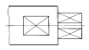

건설기계정비기능사 (2005-01-30 기출문제)
1과목: 건설기계정비(임의구분)
1. 12V 축전지 4개를 병렬로 연결했을 때 전압[V]은?
- 48
- 36
- 24
- 12
(정답률: 77%)

2. 광원의 광도가 270cd이고, 거리가 3m일 때의 조도는?
- 30 Lx
- 60 Lx
- 90 Lx
- 120 Lx
(정답률: 38%)
3. 정비작업 중 갑자기 전조등이 꺼졌을 경우와 관계가 없는 것은?
- 퓨즈
- 배선의 부착불량
- 축전지 용량 부족
- 필라멘트 단선
(정답률: 74%)
4. 검은색 또는 진한 회색을 내뿜는 건설기계 엔진의 상태가 아닌 것은?
- 연료의 불량
- 압축압력의 불량
- 밸브틈새의 불량
- 엔진오일의 불량
(정답률: 55%)
5. 유닛 분사펌프 시스템에서 페달센서의 설치 위치는?
- 페달근처
- 분사펌프
- 인젝터
- 조향핸들
(정답률: 84%)
6. 크랭크 케이스에 환기장치를 두는 이유는?
- 윤활유의 청결을 위하여
- 과열과 배압을 막기 위하여
- 엔진 과냉을 방지해 주기 위하여
- 엔진 작용 온도를 올리기 위하여
(정답률: 81%)
7. 밸브 스프링 점검과 관계 없는 것은?
- 직각도
- 코일의 수
- 자유 높이
- 스프링 장력
(정답률: 70%)
8. 압력의 단위에 속하지 않는 것은?
- kgf/cm2
- 기압
- ps
- mmHg
(정답률: 54%)
9. 실린더 블록의 동파 방지를 위해 설치한 것은?
- 오일히터
- 예열플러그
- 서머스탯밸브
- 코어플러그
(정답률: 50%)
10. 디젤기관에서 연료분사 펌프의 플런저 유효행정을 크게 하면 어떤 현상이 일어나는가?
- 연료 송출량이 감소한다.
- 연료 송출량은 변함없다.
- 연료 분사 압력이 낮아진다.
- 연료 분사량이 증가한다.
(정답률: 79%)
11. 압축비가 7.25, 행정체적이 300cm3 인 기관의 연소실 체적은 얼마인가? (단, 실린더수는 1개)
- 47cm3
- 48cm3
- 49cm3
- 50cm3
(정답률: 50%)
12. 니들 밸브와 노즐보디 사이의 간극을 맞게 나타낸 것은 어느 것인가?
- 0.1∼0.15mm
- 0.01∼0.015mm
- 0.001∼0.0015mm
- 0.0001∼0.00015mm
(정답률: 35%)
13. 발전기의 기전력 변화를 시킬 수 없는 것은?
- 충전 전류의 세기
- 자력의 세기
- 자계내에 있는 도체의 길이
- 기관 회전속도
(정답률: 36%)
14. 공기 분사식에 비교한 무기분사식의 장점으로 맞지 않는 것은?
- 공기압축기가 필요하지 않다.
- 고속 운전을 할 수 있다.
- 압축압력이 낮아도 시동이 용이하다.
- 고압펌프가 아니어도 된다.
(정답률: 40%)
15. 기관오일에 냉각수가 침입되었을 때 오일의 색은 어떻게 변하는가?
- 우유색
- 흑색
- 적색
- 갈색
(정답률: 83%)
16. 기동전동기 분해점검 사항에 해당되지 않는 것은?
- 정류자 점검
- 브러시 홀더 점검
- 슬립링 점검
- 아마추어 단락 점검
(정답률: 44%)
17. 피복제에 습기가 있을 때 용접을 하면 어떤 결과를 가져오는가?
- 기공이 생긴다.
- 언더컷이 일어난다.
- 크레이터가 생긴다.
- 오버랩 현상이 생긴다.
(정답률: 66%)
18. 아래 그림과 같이 가는 실선으로 교차하여 도시된 부분은 무엇을 나타내는가?

- 주조 상태
- 평면의 표시
- 구의 형상을 표시
- 이론적으로 정확한 면
(정답률: 65%)
19. M20 나사에 사용되는 나사산의 각도는?
- 25°
- 30°
- 55°
- 60°
(정답률: 40%)
20. 2줄 나사에서 피치가 2mm일 때 나사를 2회전시키면 진행한 거리는?
- 2 mm
- 4 mm
- 6 mm
- 8 mm
(정답률: 41%)
2과목: 일반기계공학(임의구분)
21. 탄소강에서 상온 취성을 일으키는 원소는?
- C
- Mn
- P
- S
(정답률: 35%)
22. 다음 중 열간가공과 냉간가공의 한계를 결정짓는 것은?
- 풀림 온도
- 변태 온도
- 재결정 온도
- 결정입자의 성장 온도
(정답률: 68%)
23. 교류아크 용접기와 비교한 직류아크 용접기의 특징 설명중 잘못된 것은?
- 아크의 안정성이 우수하다.
- 역률이 양호하다.
- 비피복봉의 사용이 가능하다.
- 전격의 위험이 많다.
(정답률: 63%)
24. 아크 용접봉의 종류 중 E4301 의 피복제 계통은?
- 고셀룰로스계
- 고산화티탄계
- 일미나이트계
- 저수소계
(정답률: 65%)
25. Y 합금의 성분을 나타내는 것은?
- Al + Cu + Si + Mg
- Al + Cu + Si + Ti
- Al + Cu + Ni + Mg
- Al + Cu + Ni + Ti
(정답률: 49%)
26. 2개의 롤러를 게이지 본체로 구성되어 일정한 간격으로 지지하면서 원하는 각도를 만들기 위한 측정공구는?
- 지그
- 수준기
- 각도기
- 사인바
(정답률: 56%)
27. 어미자의 눈금선 간격이 1mm이고, 버니어는 19mm를 20등분 하였다면 최소 측정값은 몇 mm 인가?
- 0.1
- 0.01
- 0.⑤
- 0.02
(정답률: 42%)
28. 구성인선 발생을 감소시키는 방법이 아닌 것은?
- 절삭속도를 크게한다.
- 절삭유를 사용한다.
- 절삭깊이를 작게한다.
- 공구의 경사각을 작게한다.
(정답률: 42%)
29. 모듈이 6, 잇수가 각각 40, 60개의 한쌍의 기어 중심거리는?
- 200mm
- 250mm
- 300mm
- 350mm
(정답률: 60%)
30. 치수보조기호 중 잘못 표시된 것은?
- 芒 : 지름
- R : 반지름
- SR : 호의 반지름
- C : 45 모따기
(정답률: 35%)
31. 암나사의 호칭지름은 무엇으로 나타내는가?
- 상대 수나사의 바깥지름
- 상대 수나사의 유효지름
- 암나사의 바깥지름
- 암나사의 유효지름
(정답률: 43%)
32. 다음은 작업 중 전기가 정전되었을 때 해야 할일이다. 해당 없는 것은?
- 주위의 공구를 정리하고 스위치는 그대로 둔다.
- 기계의 스위치를 끊는다.
- 경우에 따라서는 메인 스위치도 끊는다.
- 절삭공구는 일감에서 떼어 낸다.
(정답률: 80%)
33. 안전 표지의 종류가 아닌 것은?
- 위험 표지
- 경고 표지
- 지시 표지
- 금지 표지
(정답률: 27%)
34. 동력 전동장치의 치차(Gear)로서 통행 또는 작업시에 접촉할 위험이 있는 곳은?
- 덮게판을 덮는다.
- 통행을 금지 한다.
- 조심해서 통행한다.
- 작업을 중지하고 방치한다.
(정답률: 55%)
35. 전기용접기가 누전이 되었을 때 가장 적절한 행동은?
- 전압이 낮기 때문에 계속 용접하여도 된다.
- 스위치는 손대지 말고 누전된 부분을 절연 시킨다.
- 용접기만 만지지 않으면 된다.
- 스위치를 끄고 누전된 부분을 찾아 절연시킨다.
(정답률: 81%)
36. 안전점검 실시 시의 유의사항 중 맞지 않는 것은?
- 점검한 내용은 상호 이해하고 협조하여 시정책을 강구할 것
- 안전 점검이 끝나면 강평을 실시하고 사소한 사항은 묵인할 것
- 과거에 재해가 발생한 곳에는 그 요인이 없어졌는지 확인할 것
- 점검자의 능력에 적응하는 점검내용을 활용할 것
(정답률: 85%)
37. 오픈렌치 작업 중 가장 옳은 방법은?
- 힘의 전달을 크게 하기 위하여 한쪽 오픈렌치 죠에 파이프등을 끼워서 사용한다.
- 가동 죠에 힘이 많이 걸리도록 작업한다.
- 사용 방법은 작업자 쪽으로 당기면서 작업한다.
- 볼트 머리보다 약간 큰 오픈렌치를 사용한다.
(정답률: 79%)
38. 다음은 차량에 연료 공급시 주의 사항이다. 적당하지 못한 것은?
- 차량의 모든 전원을 off 하고 주유한다.
- 소화기를 비치한 후 주유한다.
- 엔진 시동을 끈 후 주유한다.
- 엔진을 공회전 시키면서 주유한다.
(정답률: 89%)
39. 드릴 작업 때 칩의 제거는 어느 방법이 가장 좋은가?
- 회전 시키면서 솔로 제거
- 회전 시키면서 막대로 제거
- 회전을 중지시킨 후 손으로 제거
- 회전을 중지시킨 후 솔로 제거
(정답률: 87%)
40. 운반차를 이용한 운반작업에 대한 사항 중 잘못 설명한 것은?
- 여러 가지 물건을 쌓을 때는 가벼운 물건을 위에 올린다.
- 차의 동요로 안정이 파괴되기 쉬울때는 비교적 무거운 물건을 위에 쌓는다.
- 하물위나 운반차에 사람의 탑승은 절대 금한다.
- 긴 물건을 실을때는 맨끝 부분에 위험 표시를 해야한다.
(정답률: 78%)
3과목: 안전관리(임의구분)
41. 다음 부품 중 분해시에 솔벤트로 닦으면 안되는 것은?
- 릴리스 베어링
- 십자축 베어링
- 허브 베어링
- 차동장치 베어링
(정답률: 53%)
42. 정치식 쇄석기(crusher)의 설치 및 기초작업 방법으로 옳지 않은 것은?
- 운전중 기초부의 손상을 예방하기 위해서는 앵커볼트를 완전하게 결합한다.
- 앵커볼트의 기초가 완전히 굳기전에 운전해 본 후 위치를 조정한다.
- 쇄석기는 반드시 수평이 유지 되도록 설치한다.
- 쇄석기의 설치는 기초작업용 도면에 의하여 기초작업이 선행 되어야 한다.
(정답률: 72%)
43. 지게차의 타이로드 조정은?
- 전륜 부분에서 한다.
- 후륜 부분에서 한다.
- 우측에서 한다.
- 좌측에서 한다.
(정답률: 73%)
44. 주행속도 70 Km/h인 자동차에 브레이크를 작용시켰을 때 제동거리는 약 몇 m 인가? (단, 마찰계수 μ는 0.3)
- 64
- 72
- 84
- 92
(정답률: 35%)
45. 트랙과 아이들러가 정확한 정열 상태에서 일어나는 마모 현상이 아닌 것은?
- 아이들러 플랜지의 양면이 마모된다.
- 양쪽 링크의 양면이 같이 마모된다.
- 트랙 롤러의 플랜지 4개가 같이 마모된다.
- 아이들러의 바깥 플랜지만 마모된다.
(정답률: 72%)
46. 유압장치에서 두 개 이상 분기 회로의 실린더나 모터에 작동 순서를 부여하는 밸브는?
- 시퀸스 밸브
- 안전밸브
- 릴리프 밸브
- 감압밸브
(정답률: 75%)
47. 유압펌프에서 맥동현상이 발생할 경우의 고장수리 중 틀린것은?
- 유압회로 내의 공기빼기를 한다.
- 공동현상(캐비테이션)을 없앤다.
- 유압조절 밸브 스프링을 교환한다.
- 작동유를 교환한다.
(정답률: 64%)
48. 휠 로더의 일상정비에 포함되지 않는 것은?
- 냉각수량의 점검
- 변속기 유압의 점검
- 엔진오일 압력계 점검확인
- 각 부분의 오일누설 점검
(정답률: 65%)
49. 작업 사이클 시간(cycle time)은 무엇에 의해 결정 되는가?
- 운반거리 및 작업조건에 따라서 결정된다.
- 토량 환산계수에 의해 정해진다.
- 흙의 종류에 따라 정해진다.
- 블레이드의 용량에 따라 정해진다.
(정답률: 75%)
50. 다음 중 유압회로의 구성 부품이 아닌 것은?
- 유압배관
- 원심펌프
- 유압펌프
- 유압제어밸브
(정답률: 75%)
51. 스트레이너의 용량은 유압 펌프 토출량의 몇 배 이상의 것을 사용하는가?
- 1배
- 2배
- 3배
- 5배
(정답률: 58%)
52. 유압 작동유가 갖추어야할 조건에 대하여 설명하였다. 틀린 것은?
- 방청성이 좋을 것
- 온도에 대하여 점도변화가 작을 것
- 인화점이 낮을 것
- 화학적으로 안정될 것
(정답률: 86%)
53. 트럭 크레인에서 액츄에이터가 작동하지 않는 원인으로 틀린 것은?
- 유압펌프의 고장
- 유량부족
- 흡입파이프 호스의 막힘 또는 파손
- 릴리프 밸브의 설정압 과대
(정답률: 64%)
54. 타이어형 중형 굴삭기에서 주행이 되지 않아 관련 부품을 점검하고자 한다. 점검사항과 가장 거리가 먼 것은?
- 파일럿 오일이 주행 페달로 공급되는가 점검한다.
- 메인펌프에서 소리가 나는지 점검한다.
- 주행모터로 메인펌프 압력이 전달되는지 점검한다.
- 메인 릴리프 압력이 규정대로 설정되어 있는지 점검한다.
(정답률: 47%)
55. 트랙 아이들러가 트랙프레임 위를 전,후로 움직이는 구조로 된 이유는?
- 트랙장력(긴도)를 조정하기 위하여
- 상부 롤러를 보호하기 위하여
- 트랙 롤러를 보호하기 위하여
- 트랙이 잘 벗겨지게 하기 위하여
(정답률: 59%)
56. 유압장치 고장의 주 원인들 중 틀린 것은?
- 온도의 상승으로 인한 것
- 이물, 공기, 물 등의 혼입은 무관하다.
- 기기의 기계적 고장으로 인한 것
- 조립과 접속의 불완전으로 인한 것
(정답률: 75%)
57. 모터 그레이더에서 리이닝장치의 설치 목적은?
- 작업의 직진성을 방지하기 위하여
- 회전방향을 크게하여 직진을 돕기 위하여
- 앞바퀴를 회전하려고 하는 쪽으로 기울여서 작은 반지름으로 회전이 가능하게 하기 위하여
- 작업의 원활성을 유지하여 산포작업을 돕기 위하여
(정답률: 65%)
58. 자동변속기를 제어하는 것으로 틀린 것은?
- 매뉴얼 시프트
- 토크 변환기 속도
- 가버너 압력
- 스로틀 압력
(정답률: 19%)
59. 클러치가 미끄러지는 일과 관계가 없는 것은?
- 클러치 페달의 자유간극
- 스플라인 부의 마멸
- 클러치 페이싱의 마멸
- 클러치 페이싱의 오일 부착
(정답률: 57%)
60. 동력 조향장치에 대한 설명 중 틀린 것은?
- 유압펌프의 고장시에도 기본작동은 가능하다.
- 유압펌프의 고장시에는 작동이 전혀 불가능하다.
- 유압펌프의 유압에 의해 배력작용이 가능하다.
- 유압유로는 작동유가 사용된다.
(정답률: 63%)